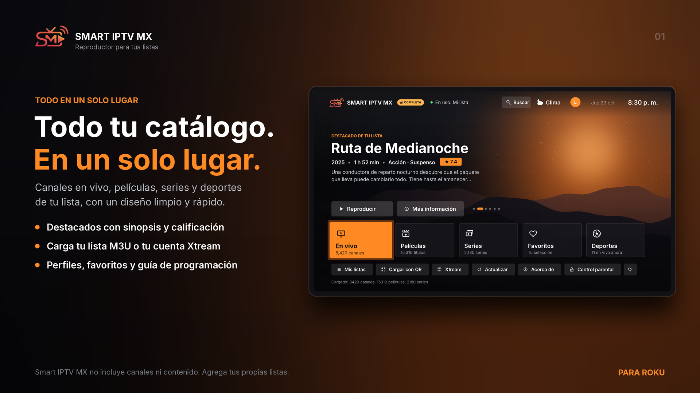

Smart IPTV MX

Smart IPTV MX está creado para que cargar tus listas sea fácil y rápido, incluso si nunca lo has hecho: escaneas un código QR con tu celular, envías tu lista, tu cuenta Xtream o tu archivo M3U, y listo. La app no incluye ni distribuye contenido; tú agregas tus propias listas.
Qué ofrece
- Carga por QR desde el celular: link M3U, cuenta Xtream (servidor, usuario y contraseña) o archivo M3U guardado en tu celular.
- Hasta 10 listas a la vez, cada una con su guía.
- Canales en vivo por categorías, con logo y guía de programación (XMLTV): lo que pasa ahora y después.
- Películas y series con portadas, fichas con sinopsis y calificación, y series por temporadas y capítulos.
- "Seguir viendo": retoma películas y capítulos donde te quedaste.
- Partidos de hoy con marcador en vivo y los canales de tu lista donde se transmiten.
- Control parental con PIN para el contenido para adultos.
- Buscador, letra A-Z, favoritos, subtítulos e idioma del audio.
- Clima en tiempo real con pronóstico de 7 días.
Soporte
¿Cómo cargo mi lista?
En la pantalla principal elige "Cargar con QR" y escanea el código con tu celular (conectado al mismo Wi-Fi que la TV). Luego elige la pestaña que necesites: Lista M3U para pegar un link, Cuenta Xtream para escribir servidor, usuario y contraseña, o Archivo para subir un archivo .m3u desde tu celular.
¿La app trae canales?
No. Es solo un reproductor; necesitas tus propias listas y los derechos para ver su contenido.
Un canal no abre
Es probable que el servidor de ese canal esté caído. Prueba otro canal o revisa tu lista con tu proveedor.
Mi lista es muy grande y tarda en cargar
Si tu proveedor te dio usuario y contraseña, cárgala como Cuenta Xtream: es mucho más rápida y ligera. Si tu link o archivo M3U es de un servidor Xtream, la app lo detecta y usa el modo rápido automáticamente. Las listas M3U muy grandes se leen completas la primera vez y después abren más rápido.
¿Cómo protejo el contenido para adultos?
En el inicio entra a "Control parental", crea tu PIN de 4 dígitos y la sección para adultos quedará protegida.
¿Cómo quito una lista?
Entra a "Mis listas", elige la lista, presiona OK y selecciona "Eliminar". Si solo quieres que no se cargue, elige "Quitar del catálogo".
Apoya el proyecto
Smart IPTV MX es gratis y lo desarrolla una persona independiente en México. Si te gusta y quieres apoyar su desarrollo, puedes invitar un café desde la sección "Apoya el proyecto" de la app. Es totalmente voluntario y no desbloquea funciones ni contenido.
¿Dudas, errores o sugerencias? Escríbenos a jean.iptvmx@gmail.com e indica el modelo de tu Roku y qué ocurrió.